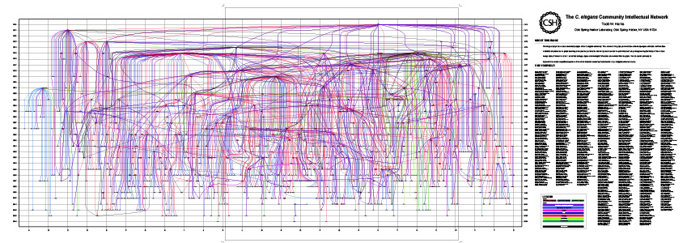
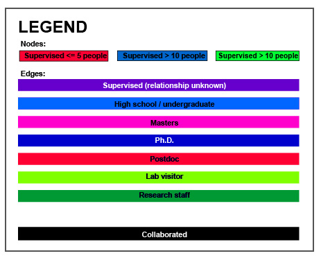

2005 - C. elegans community intellectual lineage

Several years ago, WormBase began collecting detailed intellectual
pedigrees for members of the community. To display the large degree
of collaboration within the community, I created a graphical
display that depicts the following relationships:
- PI <-> Post doc
- PI <-> Grad student
- PI <-> Masters
- PI <-> Undergraduate
- Worked with
- Collaborated with
About the image
The Y-axis displays years, with the apex of the graph positioned at
1970. Only individuals that have bibliographic or lineage data
contained in WormBase as of 5/2005 are displayed on the
graph. Individuals are placed on the Y-axis according to the year the
first entered the community. This is determined as the earliest year
of either the first paper or meeting abstract published or drawn from
lineage data, if it exists. The position on the X-axis is arbitrary,
calculated using an energy minimization algorithm to restrict the
number of intersecting lines.
Key

Viewing the image
Your browser may try to load either the EPS or SVG links directly.
Few browsers, however, can correctly render the entire image. Due to
its size and complexity, it is recommended to download the image and
view it offline in a vector-based editing program such as Adobe
Illustrator.
Downloads
EPS (encapsulated postscript)
SVG (scalable vector graphics)
Todd Harris, 29 September 2005